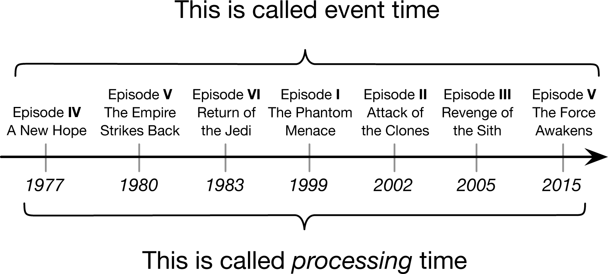
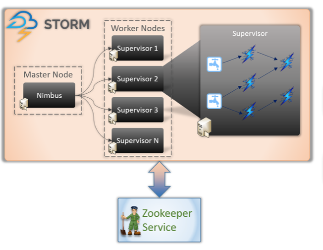
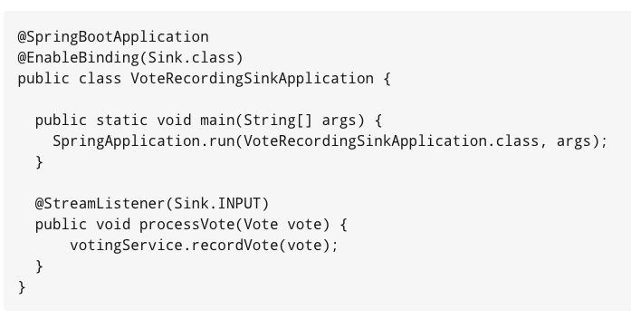

Streaming Frameworks
Do It Yourself
Hi, my name is Tom.
Developer
Ordina Belgium
@tomvdbulck
https://github.com/tomvdbulck
Agenda
- Streaming?
- Typical Problems?
- Streaming Operations?
- Kafka Streams
- Storm
- Apache Spark
- Apache Flink
- Spring Cloud Stream
- Recap
- What Next
Why Streaming?
Lambda Architecture


IoT

Clickstreams

Monitoring Data

Online Games

Financial Transactions
Streaming: Endless & Continuous Data

Streaming: Endless & Continuous Data
Continuous Flow
Speed & Realtime
Distributed & Scalable
Streaming: Typical Problems
Time
Order
Event Time vs Processing Time
Event Time vs Processing Time

Stream Operations
Stream Operations
Filter & Transform Group Aggregate Windows
Windows
Tumbling Windows Sliding Windows Session Windows
Tumbling & Sliding Windows

Session Windows

Session Windows

Triggers
These will trigger the window
Time Triggers

Count Triggers

Content Triggers

The dataflow model
A Practical Approach to Balancing Correctness, Latency, and Cost in Massive-Scale, Unbounded, Out-of-Order Data Processing - by Google
The dataflow model
Watermarking
Watermarking: Handling Late Data

Watermarking: Handling Late Data

Accumulate Results
Discard old results Accumulate all results Accumulate and Retract: both accumulation and retraction
Break
Kafka Streams
Apache Storm
Apache Storm
First production-ready stream processor
Apache Storm
Low Level: no primitives for joins or aggregations
Apache Storm
Native Stream Processor (latency 50ms possible)
Apache Storm: Users
Twitter Ali Baba Spotify Yelp
Apache Storm: DataFlow
Spouts Bolts
Apache Storm: DataFlow

Apache Storm: Fault Tolerance
Every tuple tracked At-Least-Once
Apache Storm: Architecture
Apache Storm: State

Apache Storm: Back Pressure

Apache Storm: Trident
Apache Storm: Trident
Exactly once possible Micro Batching More overhead
Apache Spark
Apache Spark

Apache Spark: Micro-Batching
Apache Spark: Rich Features
Stateful Exactly-Once ...
Apache Spark: Streaming

Apache Spark: DStream

Apache Spark: RDD

Apache Spark: Architecture

Apache Spark: State Management

Apache Spark: Back Pressure
Apache Flink
Apache Flink
Native Stream Processor ( 100 ms)
Apache Flink: Rich Features
Stateful Exactly-Once ...
Apache Flink: Stack

Apache Flink: Architecture

Apache Flink: Task Slots

Apache Flink: DataStream

Apache Flink: State Management

Apache Flink: State Management

Apache Flink: State Management
RocksDB - Key/Value store
Apache Flink: Back Pressure
Spring Cloud Stream
Spring Cloud Stream: Use

Spring Cloud Stream: Use
Spring Cloud Stream: DIY
Spring Cloud Stream: DIY

Spring Cloud Stream: DIY - when
< 500 events per second
Others
- Akka Stream
- Apache Apax
- Apache Beam
- Apache Samza
- Heron
- ...
Others
Recap
Recap
- Kafka Streams - easy with Kafka
Recap
- Kafka Streams
- Apache Storm - low latency
Recap
- Kafka Streams
- Apache Storm
- Apache Spark - stream with the king of big data
Recap
- Kafka Streams
- Apache Storm
- Apache Spark
- Apache Flink - like Spark, but native streaming / newer
Recap
- Kafka Streams
- Apache Storm
- Apache Spark
- Apache Flink
- Spring Cloud Stream - do it yourself
Recap
- Kafka Streams - easy with Kafka
- Apache Storm - low latency
- Apache Spark - stream with the king of big data
- Apache Flink - like Spark, but native streaming / newer
- Spring Cloud Stream - do it yourself
What Next?
What Next?

Questions ?
Thanks for watching!
Now kick some ass!